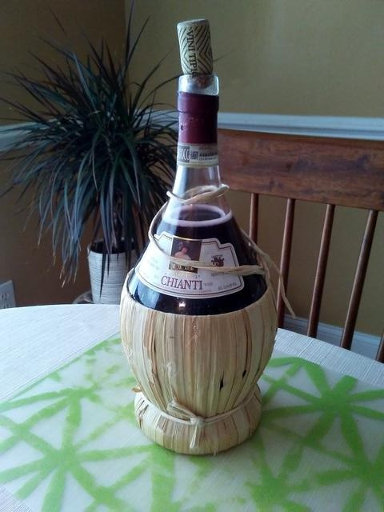
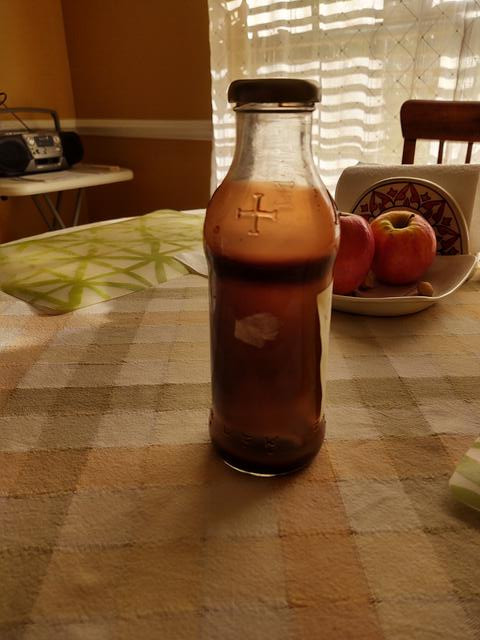

У меня семье вино делали во многих поколениях. В сарае прабабушки всегда
можно было найти напиток 15-20 летней выдержки. Но в семье не без урода.
Живя в Крыму я вина не делал, а только лишь наблюдал за процессом. А теперь
и совсем урод. С ужасом обнаружил, что я забыл тонкости технологии. Помню
лишь основные вещи, которые общеизвестны. Несколько лет назад я решил
наверстать упущенное и отработал технологию изготовления вина из
(не стреляйте) замороженного концентрата виноградного сока. Просто купить
виноград для вина выходит в разы дороже, чем взять бутылку в магазине.
К тому же вы не привязаны к сезону урожаев. И самое главное, это один из античных
греческих способов. Анализ античных технологий будет ниже.
Идея не моя, в Америке это принято. Однако я офигел от рецептов. Туда кладут
дрожжи и пьют уже через неделю. Одним словом у них выходит ужасное пойло,
вроде бражки с виноградным соком. У меня выходит вполне вино, не хуже, чем
дешевое калифорнийское бургундское. Но, не "Инкерман", конечно, на
международных выставках ему делать нечего. Рецепт будет следующий.
Я живу вне метрической системы измерений и поэтому вы сами переведете в
литры и т.д.
Все довольно просто. Берем бутылку в 1 галлон. Чуть меньше 4 литров. Добавляем
туда две банки мороженного сока по 12 унций, т.е. всего около 700 грамм.
Туда же насыпаем полтора стакана сахара. Доливаем до верха водой из под
крана. Все это будет бродить, закрытое гандоном с дыркой, чтобы не попадал воздух.
А теперь главное. Перед постановкой на брожение нам понадобится бродильный
грибок. И вот тут начинается самая геморройная часть технологии.
Винный грибок в природе находится на самом винограде. Для того чтобы занести
грибок бросьте в бутылку несколько изюминок.
Если вы поставите несколько бутылей, вы обнаружите, что вино везде получилось
разное. Где-то крепкое, где-то слабое, где-то вкус противный, где-то хороший. Вот
поэтому вам придется ставить это вино регулярно и опытным путем найти самое удачное.
Теперь вы нашли нужный грибок. Изюм отменяется. Отныне вы будете в качестве
закваски использовать осадок от предыдущего вина. Вы раб лампы. Вы не можете уже
отказаться от производства, поскольку потеряете выведенный вами грибок. Сколько
этот грибок живет вне вина, а как осадок - я не знаю. Но за 1-2 недели ручаюсь.
Бродить вино должно не менее 2-х месяцев. Нужно ли взбалтывать или нет -
я сам еще не понял. Иногда кажется - да. Иногда - нет. Вопрос открытый.
После двух месяцев слейте вино с осадка и поставьте в холодильник, чтобы
брожение окончательно остановилось и осела муть.
Дальше. Это важно. Постояв неделю без брожения вино заметно улучшает вкус.
А если вы подержите его год - то вы его вообще не узнаете, настолько
оно облагородится. Сейчас у меня в производстве постоянно находится восемь
галонных бутылок разной степени готовности. Часть вина отправляется в гараж
на длительное хранение, разлитое в обычные бутылки.
Блог производителя
Новая технология.
Безгандонная технология работает. Я получил уже два бутыля "Шабли Будуар" и
вино вышло ничем не хуже обычного. Как вы знаете, при изготовлении вина
нужно не допустить попадания воздуха в емкость. Как-то раз я задумался, а
как древние греки справлялись с этими емкостями по несколько кубометров.
Резины у нех не было ни для водяных затворов ни для прочих итересностей из
резины. Я предположил, что они просто накрывали незакрепленной крышкой. И
действительно, если емкость находится в покое, ее вообще можно не закрывать,
поскольку выделяющийся углекислый газ тяжелее воздуха и все-равно будет
постоянно находиться у поверхности сусла. Но закрывать чем-то нужно,
поскольку внешние воздушные потоки могут взбаламутить газовое равновесие в
емкости. Поставил эксперимент, и он завершился сокрушительным успехом.
Завинчивающуюся крышку я просто не заворачивал до конца и газ мог
просачиваться наружу через неплотное соединение. И все получилось на высшем
уровне. Кто молодец? Я молодец.
Продолжение. Античные технологии
Изобретя велосипед (безгандонную технологию), погрузился в изучение
античного производства вина. Никаких клапанов действительно не
предусматривалось. Если делали из давленного винограда, как это принято в
домашних хозяйствах Крыма, то виноградная шелуха всплывала на поверхность,
образуя пористую пробку, которая не пропускала воздух внутрь, но не мешала
выделению газа из сока. По другой технологии использовали чистый
виноградный сок, как это делаю я. Про клапана ни слова, однако прикрывали
крышкой (я так и знал!). Самая интересная подробность - добавление морской
воды в вино, которое было почти во всех технологиях. Можно просто соль.
Зачем - не понял, но нужно попробовать. Что не понравилось в античных
технологиях. Использование дикого бродильного грибка. А это - русская
рулетка. С некоторой долей вероятности получится бурда. Я свой грибок уже
три года селекционирую. Результат всегда предсказуем, хотя бывали случаи,
когда власть захватывал "чужой" грибок, видимо попавший случайно.
Винный камень.
В трехлетнем вине сильно выпал винный камень. Пустые бутылки как бы покрашены
в розовый цвет изнутри. Ну и еще осадок в виде комочков, не просто муть.
Любопытно, что после одного года выдержки такого не бывает. Надо будет разобраться,
кто виноват и что делать. Оно совсем не мешает, но хочется, чтобы все было благородно.

Винный камень в бутылке трехлетней выдержки.
PS. Разобрался. Винный камень - это органические соли калия и кальция. Он
образуется на третий год выдержки в результате непонятной химической реакции.
О брожении речь не идет. Чистая химия, которая дополнительно приводит к
окончательному исчезновению сахара, улучшению вкуса и крепости. Я думаю,
выпадение камня и следует считать завершением процесса производства.
А молодое вино - это всего лишь полуфабрикат, готовый к употреблению.
Про соль.
Опробовал вино, слеланное по древнегреческой технологии. Греки добавляли морскую
воду, я добавил соль. И знаете что? Вино получилось явно крепче. Необъяснимо.
Скорее всего соль нужна для жизнедеятельности грибков. Немножко переложил. Одну
чайная ложка на 3.5 литра сусла. Чувствуется на вкус. Надо будет скоратить где-то
вдвое и будет в самый раз, я считаю.
Круг замкнулся.
Таким образом, я теперь полностью перешел на античную технологию:
Концентрированный виноградный сок, отсутствие водяного затвора,
добавление соли.
Использование концентрата сока придумали вовсе не в современной Америке,
а тоже в Древней Греции. Сок выпаривали для достижения густоты и сладости.
Впрочем, были и другие способы. Современное вакуумное упаривание я считаю
значительно более приемлемым для вина.
Назад|На главную